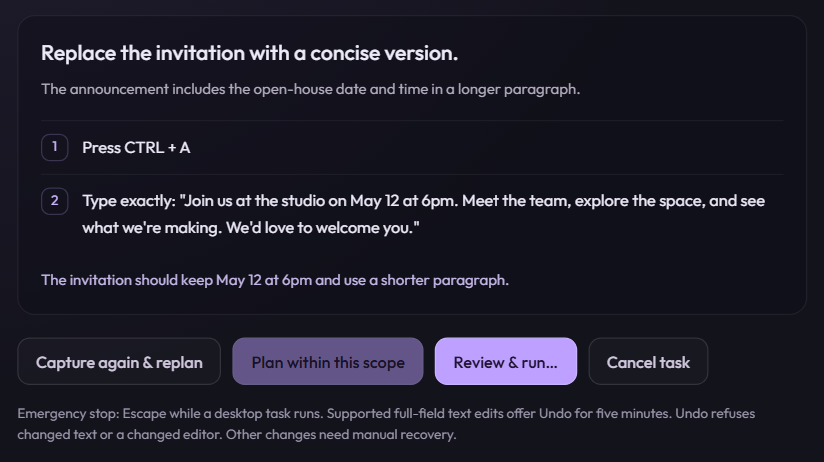
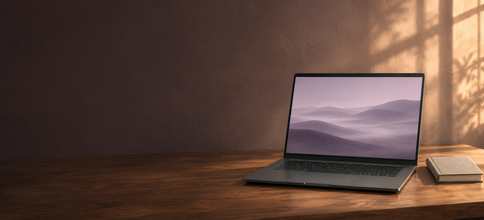
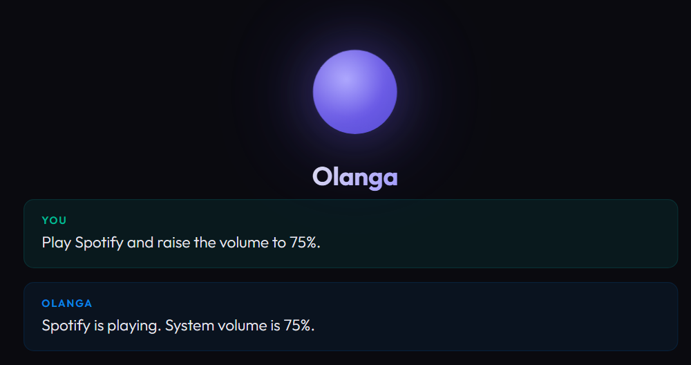
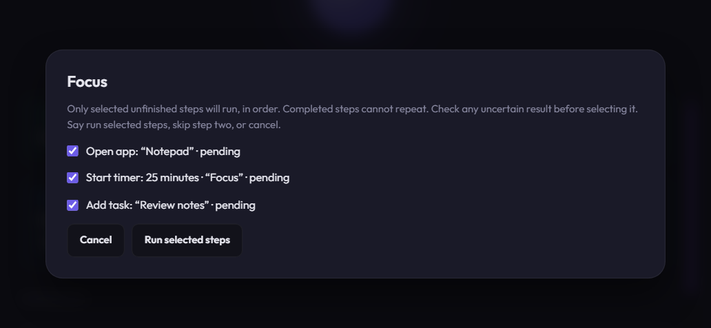

Review a screen edit.
Ask about an error you can see, or ask Olanga to shorten a paragraph. For an edit, you choose where it can type and review the proposed steps before it acts.



Open apps, run routines, and get help with your screen. Just ask Olanga.
Public release 1.6.7 · Windows 10 / 11 x64
Open an app and set the volume in one request. Olanga tells you how each action went. When you’d rather type, use the command field on Home.

Ask about an error you can see, or ask Olanga to shorten a paragraph. For an edit, you choose where it can type and review the proposed steps before it acts.

Say “Create a routine called Focus” to open the editor. Save steps to open Notepad, start a timer and add a task. Next time, say “Run routine Focus” and choose the steps you need.

Type a command on Home to launch an app, set the volume, start a timer or add a task. For example, “Add review notes to my checklist.” Optional on-device English recognition lets you review a spoken command before sending it.
For cloud conversation, cloud voice recognition and screen help, add your Gemini key in Core settings. Provider pricing and quotas apply.
Tell Olanga “I live in Fremont.” Later, ask “Where do I live?” Olanga can recall supported details like this from your PC. Review or delete saved details in Workspace, or say “Pause learning.”
The corner orb opens shortcuts. With the Spotify Windows app installed and signed in, you can ask Olanga to play music or adjust the volume.
Enable Live scores in User preferences and pick your team. The score sits beside the orb during a game. When you enter Olanga, the score and Spotify controls appear on Home. See what’s new in 1.6.7.
Open Workspace → Apps & updates → Work tools. Search a selected project locally, review source excerpts before asking Gemini, or preview file renames and moves.
Wake detection runs on your PC. Activated cloud voice requests go to Gemini, and optional Live mode sends audio during its session. Memories stay on your PC, and relevant enabled details can accompany cloud requests.
With your permission, Gemini receives a screenshot of your entire primary display. The selected area limits where Olanga can apply input. Supported edits require two confirmations. The tour stops before execution approval. Read the privacy details.
Download the Windows installer below. Olanga is free and open source under the MIT license. The current installer is unsigned, so Windows may show an unknown-publisher warning. The release includes a SHA-256 checksum.
For later releases, open Workspace → Apps & updates. Choose Check, then Download, then Install & restart when you’re ready.
v1.6.7 · Windows 10 / 11 x64 · 155 MB
Free and open source. The current installer is unsigned.